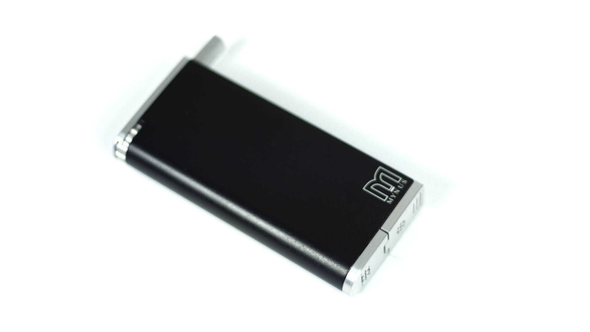

Most smokers want to give up. Many either don't have the courage to begin the process or the staying power to see it through. For the first time ever, there is a stylish device that can help them begin the journey to a healthier life and a healthier world.
Mynus is a device that allows you to control how much smoke you inhale when you smoke your own cigarettes. At the same time, it makes sure that virtually all humanly detectable smoke and odor is captured within the device and never escapes into the atmosphere. No one has ever conceived of a device that can help people stop smoking and eliminate second-hand smoke and odor.
The patent-pending design of Mynus allows you to use your own favorite cigarette brand to begin to wean yourself off it. It's not an e-cigarette. Instead, it's an ingenious device into which you insert a real cigarette. You choose the ratio between air and smoke you want to inhale. Then you light up with the push of a button and inhale, and then exhale back through the mouthpiece. After a few cigarettes, you empty the ashes through the bottom of the device.
The cigarette receiver's patent-pending design allows you to set how much air and how much smoke you want to inhale. You can change it in 10% increments from 100% smoke, all the way to down to only 10% smoke.
A system of check valves ensures that the airflow enters the combustion chamber, and then exits through the special patent-pending filter. As the smoke exits through the replaceable filter, four specially designed proprietary elements remove all humanly detectable smoke and odor.
+-+-+-+-+-+-+-+-+-+-+-+-+-+-+-+-+-+-+-+-+-+-+-+-+-+-+-+-+-+-+-+-+-+-+-+-+-+-+-+-+-+-+-+-+
With Mynus, you decrease how much smoke you inhale, until, hopefully, your craving subsides to a point where you don't need to smoke any more.
With Mynus, the device not only captures virtually all humanly detectable smoke, but the odor too. Which means everyone around you benefits.
Where 80 percent of most people's cigarettes burn away into the atmosphere without being smoked, with Mynus, the cigarette only burns for as long as you inhale. Once you stop inhaling, the cigarette stops burning.
Kelly Adamic, of Epuphany LLC and his team, have spent years and hundreds of thousands of dollars on research and development, design, prototyping and patent applications around the world. Kelly originally had the idea when his friend Ron was in the hospital and was, frankly, dying for a cigarette. At first, Kelly designed a device that would allow Ron to smoke discretely. Then he took Mynus a step further by creating and adding a "quit smoking" feature, which actively helps you stop smoking altogether. Mynus is 100 percent designed, thoroughly tested and will be assembled in America.
We are currently raising capital on Indiegogo in order to bring Mynus in to production. Please consider making your contribution to changing the lives of smokers and to making the world a smoke-free place.